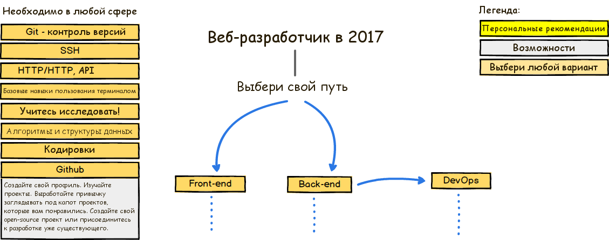
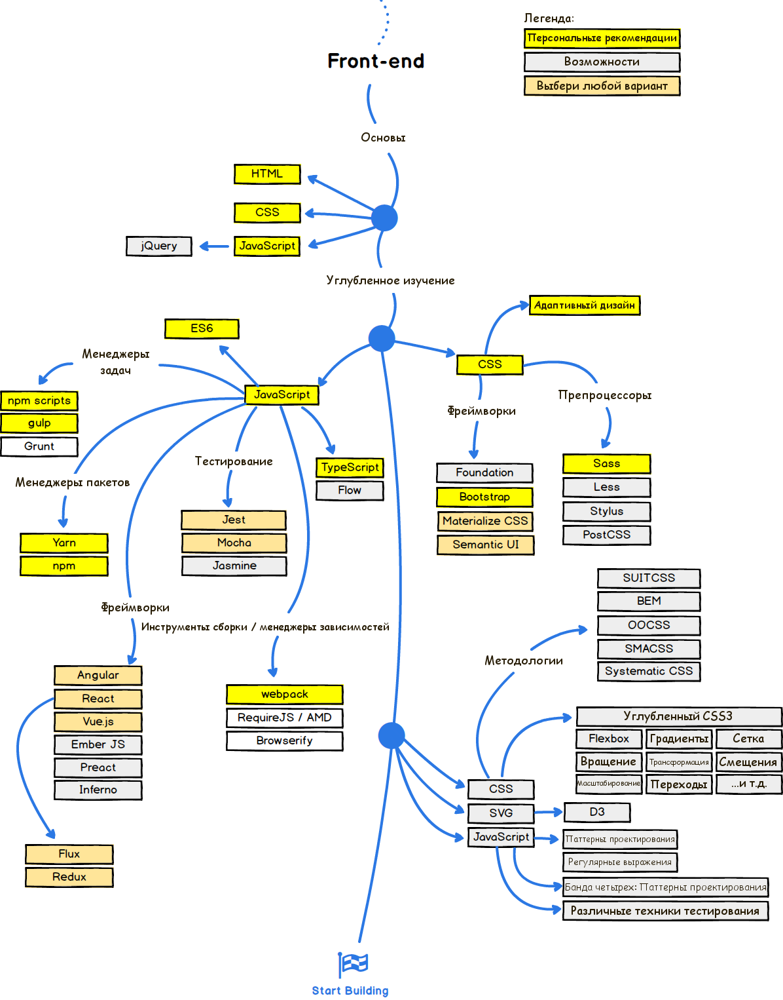
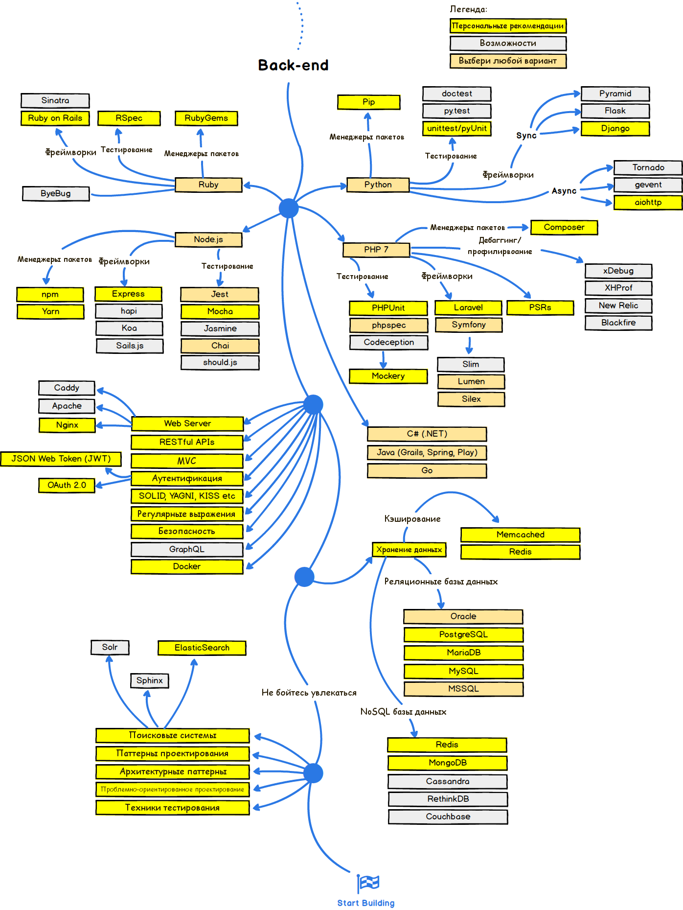
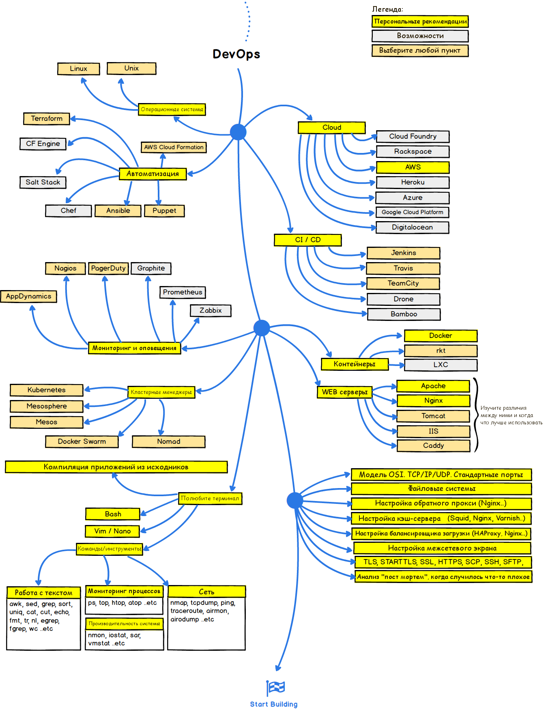

Яркая инфографика о путях развития современного веб-разработчика и технологиях, которые ему необходимо изучить, чтобы стать фронтендером, бэкендером или devops в 2017.
Первоочередная задача — определить профиль дальнейшего развития. Пробуйте, изучайте, попытайтесь понять, что вам ближе — фронтенд, бэкенд, devops, а может быть fullstack?
В любой сфере веб-разработки во главе всего стоит освоение основ. Для новичка, очевидно, задачей номер один является изучение HTML, CSS и JavaScript (+jQuery). По мере развития базовых навыков и расширения теоретического бэкграунда, можно переходить к более специализированным вещам.
Существует множество JavaScript-фреймворков и библиотек, владение которыми значительно упрощает веб-разработчику жизнь. Среди них можно выбрать наиболее удобный и подходящий конкретному программисту пакетный менеджер, инструмент тестирования и сборки, менеджер задач и многое другое на любой вкус и круг потребностей.
Сегодня сфера фронтенд-разработки развивается как никакая другая. Постоянно появляются и совершенствуются фреймворки и инструменты, рождаются новые методологии и паттерны, сама идеология фронтенда давно вышла далеко за пределы верстки. Поэтому одна из первостепенных задач веб-разработчика — оставаться на плаву, быть в курсе современных тенденций развития данной области.
В области бэкенд-разработки за последние несколько лет также произошли большие перемены. PHP давно уже не является монополистом на рынке бэкенд-технологий, хотя его последняя версия, PHP 7, более чем достойна внимания. На арену ворвались Node.js, Ruby и Go. Современные технологии дают возможность разрабатывать сложную бизнес-логику и добиваться высокой производительности.
Работа devops — очень ответственная. Современное веб-приложение — огромный и сложный организм, и задача devops в том, чтобы поддерживать правильное его функционирование. Мониторинг процессов, работа в облаке, веб-контейнеры, непрерывная интеграция — вот лишь малая часть стека web-технологий, позволяющих существовать как единое целое и выполнять свои функции веб-приложению.
